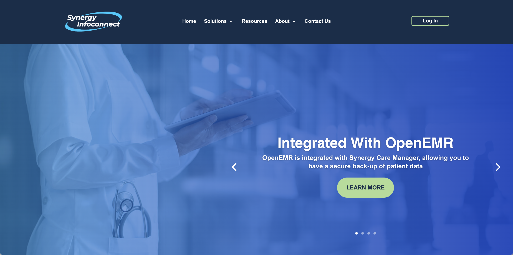

Synergy Infoconnect
Summary
As a Marketing Coordinator at Synergy Infoconnect, I was tasked with being their webmaster. In this role, I was in charge of all functions relating to their website. From competitor and topic research to content creation, from design to SEO, I implemented everything. Through this role, I was able to open my eyes to the intricacies and BTS of digital branding. In fact, this is what sparked my interest in HTML, CSS, and Javascript coding.
Fresno Geriatric Medical Group

Summary
While working at Synergy Infoconnect, I also monitored our clients' webpages. Our commitment to helping our clients succeed in their business allowed us to capture more earnings and foster stronger customer relations. Specifically in my experience, I was able to practice and strengthen some soft skills such as: Adaptability, Problem Solving, Conflict Resolution, Active Listening, and Communication.
Skillset
Customer Relations: Responded to patient reviews and emails pertaining to the FGMG and Infoconnect. Product Marketing: Crafted messages about analytics software to resonate with practices and physicians. Growth Marketing: Created social media posts aimed at increasing potential leads. Even in a stagnant environment such as healthcare, I was able to attract a dozen leads from practices. Market Analysis and Research: Research competitors and their offerings, identified missing painpoints, and compiled data on their consumer sentiment. Cross-function Collaboration: Constantly partnered with software development and sales teams to create informational landing pages, social media posts, and manuals all about our software.